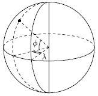

Home Page
F.A.Qs
Statistical Charts
Past Contests
Scheduled Contests
Award Contest
| Online Judge | Problem Set | Authors | Online Contests | User | ||||||
|---|---|---|---|---|---|---|---|---|---|---|
| Web Board Home Page F.A.Qs Statistical Charts | Current Contest Past Contests Scheduled Contests Award Contest | |||||||||
|
Language: Knockdown
Description The Evil Empire is devising a plan to destroy the world. This plan is called "Operation Knockdown".
The plan is to place a number of high-yield nuclear bombs in different places around the world, so that their simultaneous detonation will destroy everything on the planet. For the purpose of planning this operation, bombs have destruction distance - the distance from the point of bomb's detonation to all the places where everything is considered destroyed. Places for the bombs have been already selected. Now the Evil Empire wants to minimize the cost of production for the bombs. It is expensive to design atomic bombs tailored for different destruction distances, so the idea is to design a bomb with a specific destruction distance and to produce bombs according to this design for all the selected places. The problem is to find the minimal required destruction distance for the bomb design, so that destruction of the whole world is ensured.  For this problem the world is modeled as a sphere of a unit radius. The coordinates of the selected points for the bombs are specified in geographic coordinate system with latitude φ (−90° < φ < 90°) and longitude λ (−180° < λ ≤ 180°). Latitude is the angle between a point and the equator, and longitude is the angle between a point and the prime meridian. The bombs are never placed on the poles, so their latitude is always less than 90 degrees by its absolute value. Distances for destruction purposes are measured on the sphere. For example, the distance between the poles is exactly. The world is considered destroyed if the distance from any point on the sphere to the closest bomb is less or equal to the destruction radius. Input The first line of the input contains a single integer number n (1 ≤ n ≤ 20) - The number of the bombs. The following n lines describe the places of the bombs. Each line contains two integer numbers φi and λi (−90° < φi < 90°, −180° < λi ≤ 180°) - latitude and longitude of the bomb. No two bombs are situated in the same place. Output Write to the output a single number - the minimal destruction radius of the bombs that ensures destruction of the whole world. The answer must be precise up to 10-6 . Sample Input 4 59 30 53 83 41 69 41 41 Sample Output 2.864479 Source |
[Submit] [Go Back] [Status] [Discuss]
All Rights Reserved 2003-2013 Ying Fuchen,Xu Pengcheng,Xie Di
Any problem, Please Contact Administrator